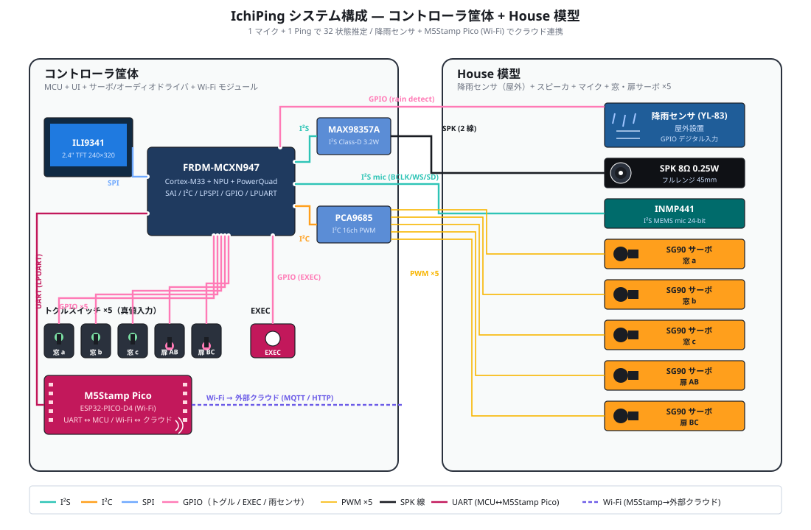
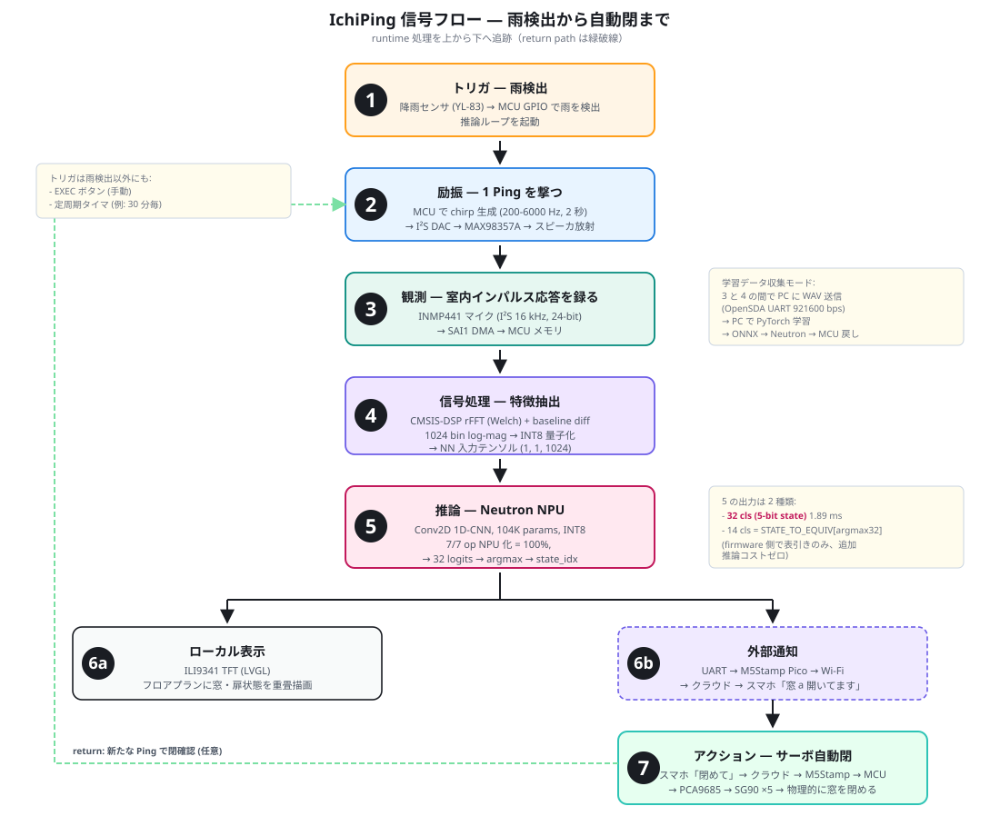
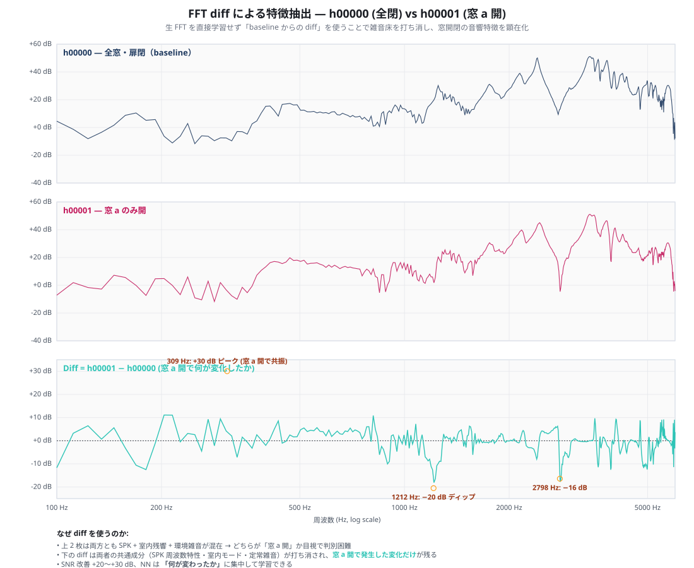
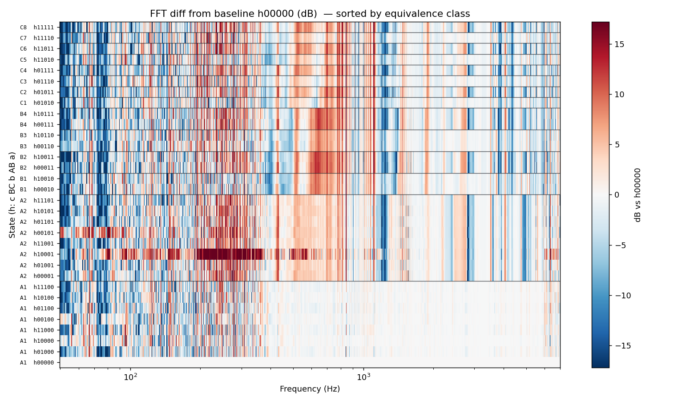
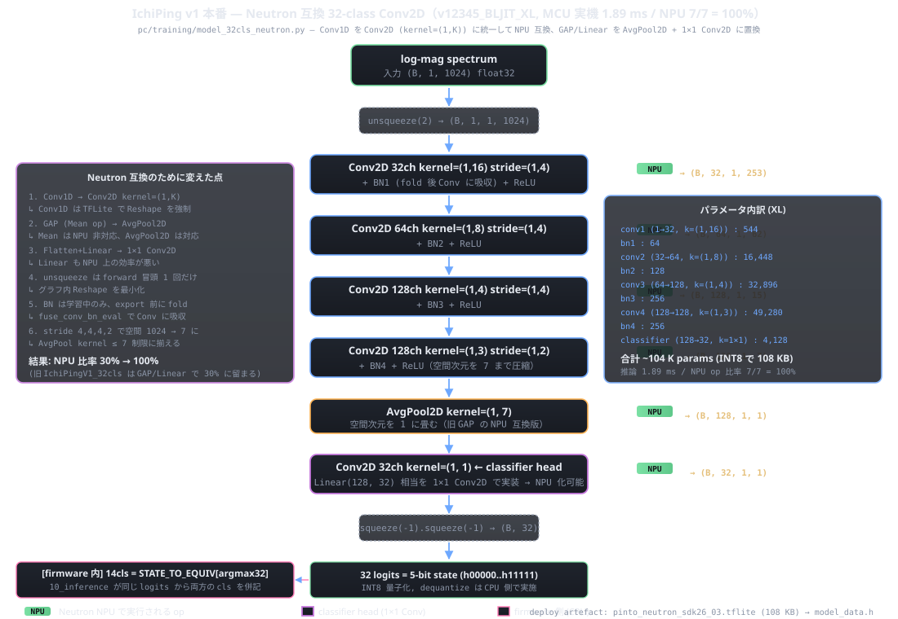

概要
「雨降ってきた、窓大丈夫？」 外出先での不安を解消するエッジ AI デモ。 スピーカから 1 発の物理 Ping を撃ち、たった 1 個のマイクで三つの部屋の窓と扉の状態を調べます。
「雨降ってきた、窓大丈夫？」を 1 マイク 1 Ping のエッジ AI で解決 ─ 雨検出 → 32 状態推定 → スマホ通知 → サーボ自動閉まで完結

「雨降ってきた、窓大丈夫？」 外出先での不安を解消するエッジ AI デモ。 スピーカから 1 発の物理 Ping を撃ち、たった 1 個のマイクで三つの部屋の窓と扉の状態を調べます。
機材は コントローラ筐体（MCU / 表示 / トグル / アンプ / サーボドライバ / Wi-Fi モジュール）と House 模型（マイク / スピーカ / サーボ ×5 / 降雨センサ）の 2 箱に分かれ、ケーブルで結ぶ構成。 模型側のトグルスイッチ ×5 は窓・扉の真値ラベルとして学習データに付与される。 クラウドとスマホは筐体外の外部システム。

雨検出 → 1 Ping 励振 → マイク観測 → 信号処理 → NPU 推論 → ローカル表示 + スマホ通知 → ユーザのアクションでサーボ自動閉まで、runtime の処理経路を 1 枚で示しています。 学習データ収集モードでは ③〜④ の間で WAV を PC に送出し、PyTorch 学習 → ONNX → Neutron 変換 → MCU 戻しのサイクルを回します。
3 部屋を模した 30 cm スケールのアクリル筐体に、PCA9685 経由で SG90 ×5 が 窓と扉を物理的に開閉する。模型側のトグルスイッチ ×5 を「真値」として PC に送り、教師ありデータを半自動で量産できる仕組み。
| 役割 | 部品 | 単価 | Vendor / DigiKey リンク | 配置 |
|---|---|---|---|---|
| MCU | NXP FRDM-MCXN947 | $49 | DigiKey: FRDM-MCXN947 | コントローラ筐体 |
| マイク | InvenSense INMP441 I²S MEMS breakout | $2-5 | 汎用 (AliExpress / Amazon) ／ bare IC は DigiKey: INMP441ACEZ-R7 | House 模型 |
| アンプ | MAX98357A I²S Class-D | $5.95 | DigiKey: Adafruit 3006 | コントローラ筐体 |
| サーボドライバ | PCA9685 16ch PWM | $14.95 | DigiKey: Adafruit 815 | コントローラ筐体 |
| サーボ | SG90 9g micro servo ×5 （オチ「窓自動閉」担当） | $5.95×5 | DigiKey: Adafruit 169 | House 模型 |
| 表示 | ILI9341 2.4" TFT 240×320（RGB565, LVGL, タッチパネル付き） | $29.95 | DigiKey: Adafruit 2478 | コントローラ筐体 |
| 操作入力 | パネルトグル SPST ×5（窓 a/b/c + 扉 AB/BC 真値） | $3.50×5 | DigiKey: E-Switch ST161D00 | コントローラ筐体 |
| 操作入力 | EXEC タクトスイッチ 6×6 mm | $0.20 | DigiKey: 6mm タクト検索 | コントローラ筐体 |
| Wi-Fi モジュール | M5Stamp Pico（ESP32-PICO-D4） | $6.50 | DigiKey: M5Stack K051 | コントローラ筐体内に統合、MCU と UART (LPUART) で接続 |
| 降雨センサ | YL-83 抵抗式モジュール | $1.50 | 汎用 (AliExpress / Amazon、DigiKey 取扱なし) | House 模型に統合（屋外設置）、MCU の GPIO に直接入力 |
| 1000 µF 16 V 電解 | サーボ V+ 突入電流吸収 | $0.55 | DigiKey: Chemi-Con EKYB160ELL102MJ16S | コントローラ筐体 |
| LED 緑 5mm | PWR 表示 | $0.25 | DigiKey: Dialight 5500205F | コントローラ筐体 |
| スマートホーム連携 | クラウド (Home Assistant 等の MQTT broker) | — | (ソフトウェア) | 筐体外 (Wi-Fi 経由) |
| PC 連携 | OpenSDA UART 921600 bps（学習データ収集用）／ USB CDC | — | (オンボード) | コントローラ筐体 |
詳細な配線ピンマップは hardware/wiring.html、 完全な BOM (抵抗・コンデンサ・ジャンパ線・USB ケーブル等含む) は hardware/bom.html を参照。
注: 旧 BOM の「Adafruit 3421」は INMP441 ではなく SPH0645LM4H（別チップ）です。 本ファームウェアは INMP441 を期待するため、Adafruit 3421 では動きません。汎用 INMP441 ブレイクアウト（AliExpress / Amazon）または bare IC + 自作 PCB を推奨。
外出中に空が暗くなり、雨がポツポツと降り出した。スマホを取り出して — 「あれ、窓閉めてきたっけ…？」
家まで戻る時間も余裕もない。誰もが一度は経験する、地味だけど落ち着かない不安です。
IchiPing は 「1 個のマイクと 1 発の Ping だけで、家中の窓と扉の開閉 32 通りを当てる」 ことを実現したエッジ AI デバイスです。窓 3 個 + 扉 2 個 = 5 bit → 32 通りの組合せ状態を 1 ショット推論で特定します。
これに 降雨センサ + M5Stamp Pico (ESP32) をデモ用周辺機器として追加することで、次のフローが成立します:
今回は PoC ですが、外部ネットワークへの接続用に ESP32 (M5Stamp Pico) を搭載しており、スマートホームシステムに統合する基本機能を実装しています。
設計開始時には 「32 状態のうち 14 状態しか区別できないはず」 と予想していました。 マイクと SPK は Room A の中央にあり、扉 AB が閉まれば Room B / C は音響的に遮断され、 向こう側の窓状態は観測不能になる — これが「観測等価性」の物理的予言です。

3 場面の上から見た間取り図。可聴域 (緑) と遮断域 (灰色)、観測可能な窓 (オレンジ) と 観測不能な窓 (灰色) を区別。集計は 2 + 4 + 8 = 14 / 32。
| 扉条件 | 真状態数 | 観測可能なクラス |
|---|---|---|
| 扉 AB 閉 (BC は問わず) | 16 配置 | 2 クラス (窓 a の開閉のみ) |
| 扉 AB 開, BC 閉 | 8 配置 | 4 クラス (窓 a, b の組合せ) |
| 扉 AB 開, BC 開 | 8 配置 | 8 クラス (窓 a, b, c の組合せ) |
| 合計 | 32 配置 | 2 + 4 + 8 = 14 クラス (理論) |
しかし、v12345 検証 (MCU 実機 8 モデル × 32 状態 sweep) で 当初予言は経験的に否定 されました。 実機計測の結果、32 真状態すべてが 100% 識別可能 だったのです。
| モデル | 32 cls 正解率 | 14 cls 正解率 |
|---|---|---|
| v12345_BLJIT_live | 32 / 32 = 100% | 32 / 32 = 100% |
| v12345_BLJIT_factory (校正不要) | 28 / 32 = 88% | 32 / 32 = 100% |
| v12345_50f_live_noiselow (騒音下) | 32 / 32 = 100% | 32 / 32 = 100% |
理由は 実扉が完全遮音ではなく -20〜-30 dB の漏れがあった こと。 同じ等価クラスに属する状態のサブ状態にも、扉を透過した微弱な音響シグナルが残っていました。 これを学習側で拾うために Baseline Jittering Augmentation という手法を開発: 各録音を 5 種類の baseline で diff して 5 サンプル分に増殖させ、 「baseline 環境に依存しないラベル決定境界」を獲得させたのです。
結果、閉鎖扉を透過した微弱な信号も NN が捉え、観測等価性の理論限界を突破して 32 クラス全分類に成功 しました。詳細: v12345 検証レポート / nn_methods_compare §1。
IchiPing の 「Ping を撃って返ってきた音から環境を推定する」 という基本原理は、 まったく新しい発明ではありません。自然界と軍事技術にすでに数億年〜数十年の蓄積があります。
| 主体 | 原理 | 用途 |
|---|---|---|
| 🦇 蝙蝠 | 20-200 kHz の超音波 chirp を口/鼻から発射 → 反射音を耳で聞き分けて飛翔中の昆虫や障害物の位置・大きさ・動きを把握 | 暗闇飛翔 / 狩り |
| 🐬 鯨類 (イルカ・ハクジラ類) | クリック音や FM スイープを噴気孔下のメロン器官から発射 → 下顎の脂肪体で受波して魚群や海底地形を 3D 再構成 | 索餌 / 仲間との通信 |
| 🚢 潜水艦のアクティブソナー | 低周波 ping を水中に放射 → 反射エコーから対象艦の位置・距離・速度を計算 | 索敵 / 海図作成 |
| 🔊 IchiPing | スピーカから 1 Ping (200-6000 Hz 掃引) → マイクで室内インパルス応答を録音 → NPU が窓・扉の開閉状態を推定 | 家中の窓状態モニタリング |
共通する 4 ステップ: ① 既知の探査音を発射 → ② 反射・伝搬の応答を観測 → ③ 環境固有の特徴 (反射時間 / 周波数応答 / モード) を抽出 → ④ 環境状態を推定。
IchiPing はこの アクティブ音響センシング の原理を、 $50 の MCU + $8 のマイク・スピーカで、家庭環境というスケールに落とし込んだ実装です。 蝙蝠が暗闇の昆虫を「聴いて」捕まえるのと同じことを、開いたままの窓に対してやっている と言えます。
NN に渡す入力は 生の FFT スペクトルではなく、「baseline (h00000 全閉) からの diff」です。 これが SNR を大きく改善し、窓開閉の特徴を顕在化させる鍵になっています。

上から:
SNR 改善は +20〜+30 dB。NN は「環境全部の絶対値」ではなく 「何が変わったか」に集中して学習できるため、少サンプルでも高精度を実現できます。

32 状態を等価クラス順 (A1 → A2 → B1..B4 → C1..C8) に縦に並べ、横軸を周波数 (50-5000 Hz log) として diff を 色 (赤 = +dB / 青 = -dB) で示したヒートマップ。 クラスごとに独自のパターンが目視で確認できます:
クラス境界ではっきり色パターンが切り替わるのが見え、これが 14 等価クラスへのマッピングが NN にとって学習可能 な根拠です。さらに同じクラス内 (例: A1 の 16 サンプル) でも 微妙な色差があり、これが 32 真状態すべて識別可能 だった理由 (扉漏れによる サブクラス情報の残存)。
NN はこの「形状の違い」を Conv1D / Conv2D で学習し、状態を識別します。 生 FFT 直接学習では「窓 a 開」と「室温が下がった」を区別できませんが、 diff にすれば環境変化はキャンセルされて窓状態だけが残る、というのが本手法の本質です。
PC で学習させたモデルを そのまま MCU に持っていくと NPU 比率は 30% 程度 に留まり、 CPU フォールバックで推論時間と消費電力が悪化します。これを解決するために、 IchiPing の本番モデルは MCXN947 Neutron NPU が 100% 処理できる構造に op を書き換えた 専用アーキを採用しました。

| 層 | op | 出力 shape | params | NPU |
|---|---|---|---|---|
| 入力 | log-mag spectrum | (B, 1, 1024) | — | — |
| Conv2D 32ch | k=(1, 16), s=(1, 4) | (B, 32, 1, 253) | 544 | ✓ |
| Conv2D 64ch | k=(1, 8), s=(1, 4) | (B, 64, 1, 62) | 16,448 | ✓ |
| Conv2D 128ch | k=(1, 4), s=(1, 4) | (B, 128, 1, 15) | 32,896 | ✓ |
| Conv2D 128ch | k=(1, 3), s=(1, 2) | (B, 128, 1, 7) | 49,280 | ✓ |
| AvgPool2D | k=(1, 7) | (B, 128, 1, 1) | 0 | ✓ |
| 1×1 Conv2D | classifier head | (B, 32, 1, 1) | 4,128 | ✓ |
| 出力 | 32 logits → argmax → state | (B, 32) | — | — |
合計 ~104K params / 108 KB INT8 / 7 op すべて NPU 化 = 100% NPU 比率 / 推論時間 1.89 ms。
| 変更前 (素直な実装) | 変更後 (Neutron 互換) | 理由 |
|---|---|---|
| Conv1D | Conv2D kernel=(1, K) | Conv1D は TFLite で Reshape を強制 → fusion が崩れる |
| GlobalAveragePool (Mean op) | AvgPool2D k=(1, 7) | Mean op は NPU 非対応。stride 4,4,4,2 で空間 1024→7 に揃え kernel ≤ 7 制限に収める |
| Flatten + Linear (FC) | 1×1 Conv2D | Linear は NPU 上で非効率。1×1 Conv2D で等価実装し NPU に載せる |
| BatchNorm（推論時も残す） | export 前に Conv に fold | fuse_conv_bn_eval で Conv に吸収し推論グラフから消す |
NN 本体の出力は 32 logits（5-bit 真状態の softmax）のみ。
14 観測等価クラスは firmware 側で STATE_TO_EQUIV[argmax32] テーブル参照だけで導出するため、
追加の NN 推論コストはゼロ。1 推論で cls32 / cls14 /
second32 候補 の 3 値を併記出力できます。
家中にセンサを散らす方式は配線・電池交換・通信の地獄を抱えるのが常ですが、 室内の音響インパルス応答（RIR: Room Impulse Response）は 窓 1 枚が開くだけでも全体のモードと残響が変わるという性質を持ちます。 部屋を丸ごと共振器とみなして 1 点で全部聴くほうが筋がいい — それが IchiPing の出発点です。
パッシブにマイクで生活音を聞くだけでは、家が静まりかえった時刻に観測できなく なります。IchiPing は 物理 Ping（200 Hz から 6 kHz への能動的指数掃引）を撃ち、 その応答を分析するアクティブ計測スタイルを取ります。
このような物理的に裏付けのある変化を 1D CNN に学習させ、組合せ状態を 一発で当てに行きます。CNN backbone は約 14K パラメータの軽量設計で、MCXN947 内蔵の NPU + PowerQuad DSP で INT8 推論まで完結します。
採用したのは InvenSense INMP441（I²S, 24-bit）です。
出力側は MAX98357A（Class-D 3.2 W）で、デモ用には 8 Ω 0.25 W の 45 mm
フルレンジを 3 dB ゲイン固定で駆動。chirp は MCU 内で生成して I²S DAC ストリームに
流し込みます（firmware/projects/07_speaker_test,
08_mic_speaker_test, 09_collector が該当）。
主要部品の選定根拠は hardware/bom.html と docs/spec.html §6 にまとまっています。
リポジトリは MCU 側 C ファームと PC 側 Python クライアント・学習パイプラインの 二段構成です。
firmware/projects/01_dummy_emitter 〜 10_inference — ブリングアップを段階分割した 10 プロジェクト群firmware/shared/ — フレーム形式、PCA9685/LU9685 ドライバ、SAI mic/speaker、励振パターンライブラリ、表示パネルpc/collector_client.py — シリアル/TCP/file 入力から WAV + CSV ラベルを保存pc/inference_client.py — 推論結果をリアルタイム可視化pc/patterns.yaml + pc/patterns.py — YAML 駆動の励振パターンライブラリpc/training/ — 1D CNN マルチタスク（〜14K params）の学習 → ONNX エクスポート → eIQ Toolkit で MCU へただ広帯域 chirp を撃つだけでなく、3 部屋模型の共鳴周波数を物理的に予測 (f₁₀₀ ≈ 572 Hz) し、判別性の高い帯域に集中投下する励振パターン設計も 検討中です。これにより学習サンプル数の削減と推論の interpretable 化を狙います。 詳細は docs/probe_sound.html にまとめています。
「イチ個のマイクで、Ping！と当てる」「1 発の Ping で家中を聴く」 というコンセプトを縮めて IchiPing。当初は気圧センサで攻める案 （DoorBaro / WindowGuard）でしたが、音響アクティブ計測のほうが筋が良いと 判断してピボットしました。
ソース・ドキュメント・配線図・部品表すべて公開しています。
https://github.com/airpocket-soundman/IchiPing
pc/collector_client.py）